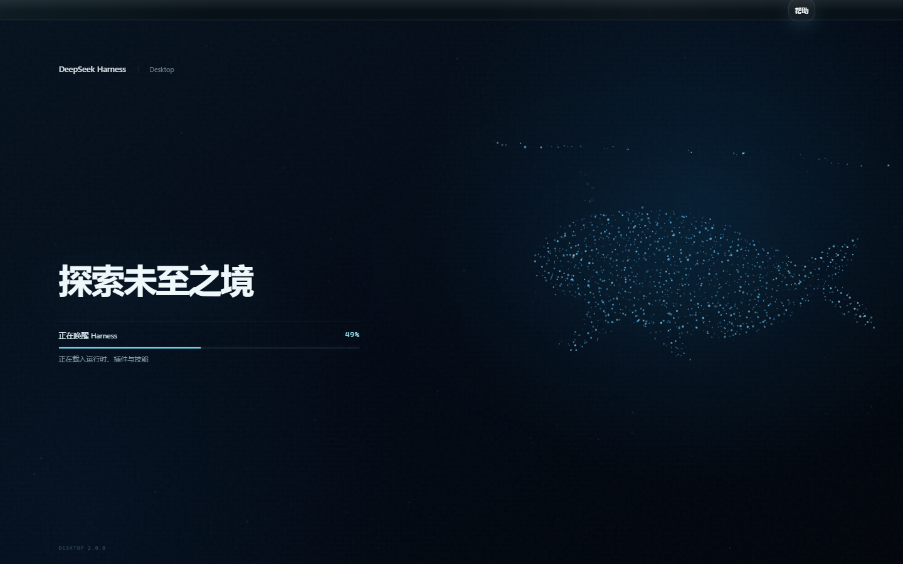
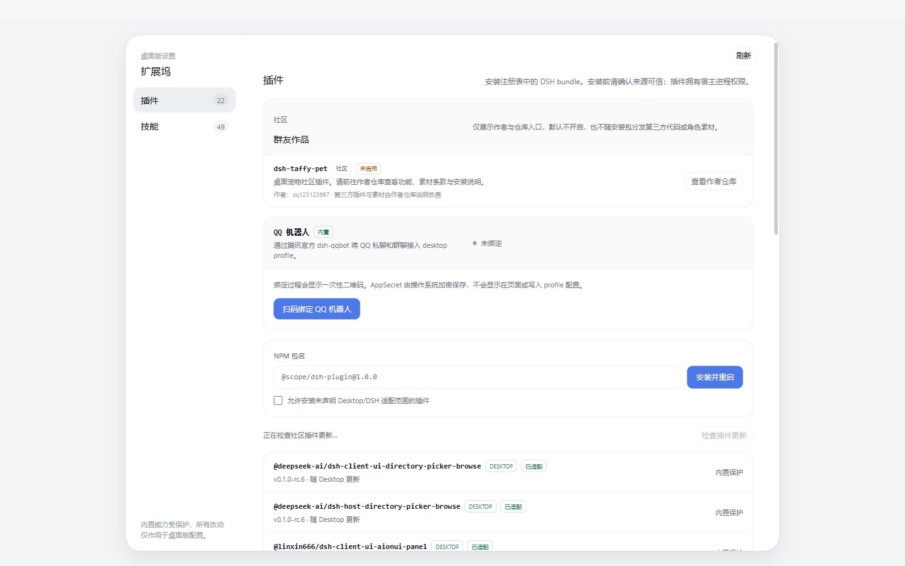
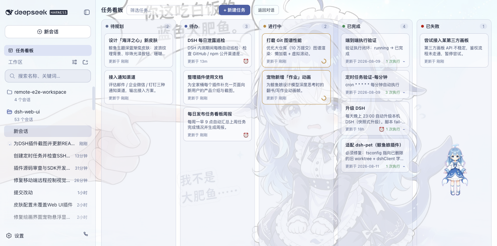
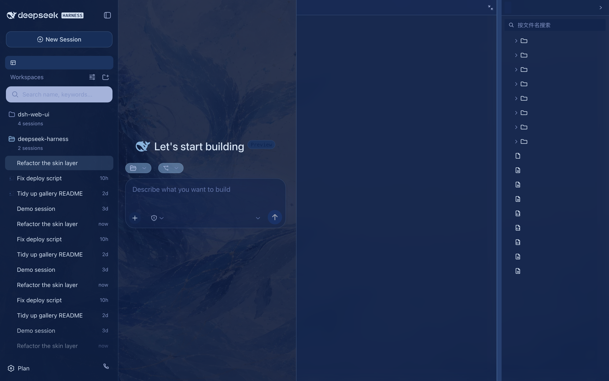
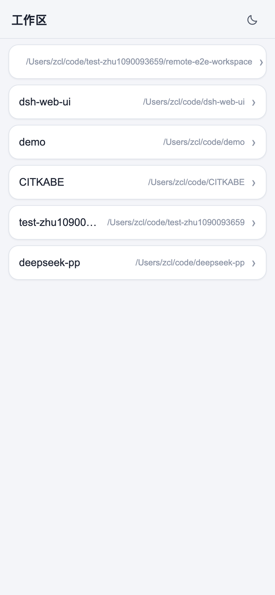
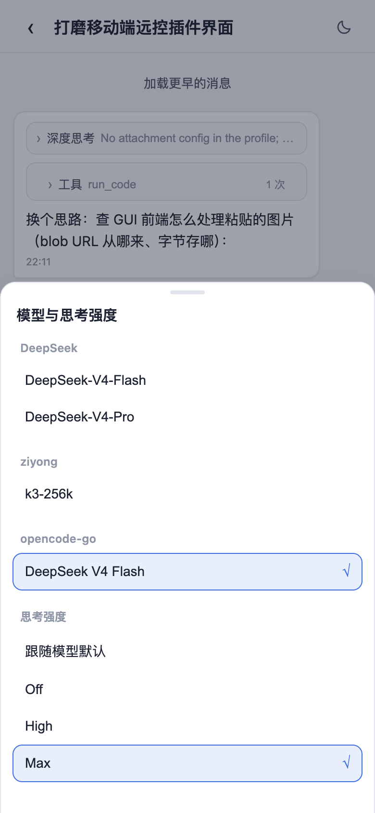

完整 Web Surface
ORIGINAL INTERFACE不是缩水重写。会话、工具调用、模型选择、权限与插件界面保持完整。
DeepSeek Harness Desktop 社区版
把官方 Web Surface 完整装进 Windows 桌面，并加入插件扩展、自动更新、独立配置与原生应用生命周期。
无需另外安装 Node.js。下载、启动，然后直接开始工作。
下载 DeepSeek Harness Desktop v0.1.3
原版能力是核心，桌面体验是外壳。所有增强都通过独立 profile 与插件组合完成。
不是缩水重写。会话、工具调用、模型选择、权限与插件界面保持完整。
本地主机启停、崩溃恢复、日志轮转、窗口状态与自动更新统一管理。
任务看板、Git 图谱、远程连接、宠物、统计与主题都可独立启用。
Electron 安全启动官方 DSH 本地主机，再加载桌面 profile。原版 Web 界面、插件协议和数据结构保持不变。

扩展坞发现已安装插件、社区 bundle 与本地技能。安装前确认来源，支持回滚，内置能力始终受到保护。

任务看板将工作拆成待规划、待办、进行中、已完成和失败五种状态。支持交给真实会话执行与 cron 定时调度。

九款主题完整适配核心界面和桌面插件。先试穿，再应用，浅色与深色状态保持一致。

扫码配对后，在手机上查看工作区、继续会话、切换模型与权限。支持局域网直连与 Cloudflare 公网隧道。



下载 x64 安装包，应用会自动检查后续更新。
$DeepSeek Harness Desktop v0.1.3下载
克隆完整项目，安装依赖后打包 Windows 桌面应用。
每次发行都提供中文在前、English 在后的同页日志。应用会先展示完整更新内容，下载与重启安装均由你确认。
这是由社区维护的开源桌面发行版。欢迎提交问题、贡献插件、分享主题，或参与桌面体验的持续改进。